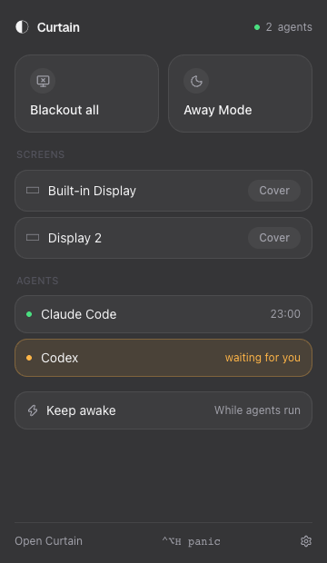
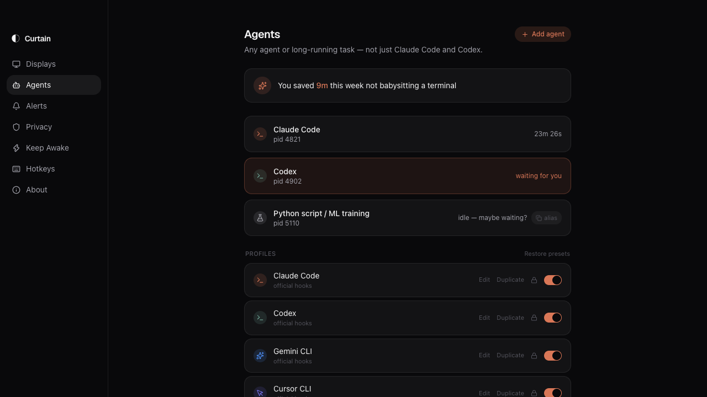
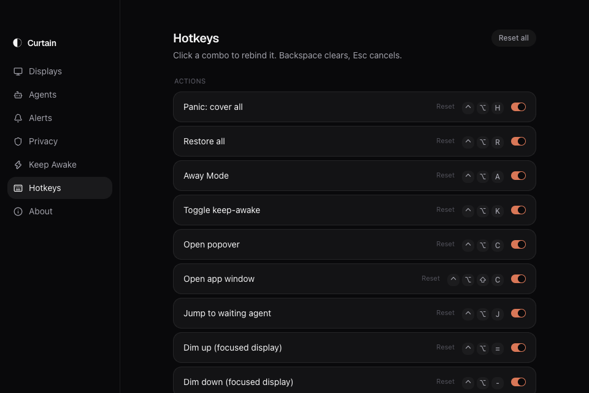

Curtain covers your display instantly, keeps your machine awake while Claude Code, Codex or any long task runs, and pings you the moment one is waiting on you.

Why Curtain
Three small problems that compound when you run AI coding agents for hours: someone glances at your screen, your Mac goes to sleep mid-run, or you miss the moment an agent actually needed you.
One tap or hotkey covers a single display or every display in pure black. Apps keep running underneath — it's privacy, not a lock screen.
Detects Claude Code, Codex, Gemini, Cursor, Aider and more, and holds your machine awake only while one of them is actually working.
Native notification, sound and a free phone push the instant an agent is waiting — via official hooks where they exist, a PTY wrapper where they don't.

Every agent, not just one
Claude Code, Codex, Gemini CLI, Cursor CLI, GitHub Copilot CLI, Qwen Code and Aider connect through each tool's own hook mechanism. Anything else — a build, a training run, a render — works through a drop-in wrapper CLI or a generic notify command.
Yours to rebind
Rebind panic, restore, Away Mode, keep-awake, or any individual display — keyed to a stable hardware ID so replugging a monitor into a different port never swaps which key covers which screen. One combo, the emergency restore, can never be disabled.

Get it
Signed releases aren't free on either platform — both installs below unblock the OS's unsigned-app warning for you.
Apple Silicon + Intel. Unsigned (no $99/yr Apple dev account) — the cask clears the quarantine flag for you, so there's no Gatekeeper prompt to click through.
Unsigned — SmartScreen will show a warning the first time; click "More info" → "Run anyway". Or grab the .msi/.exe directly from Releases.